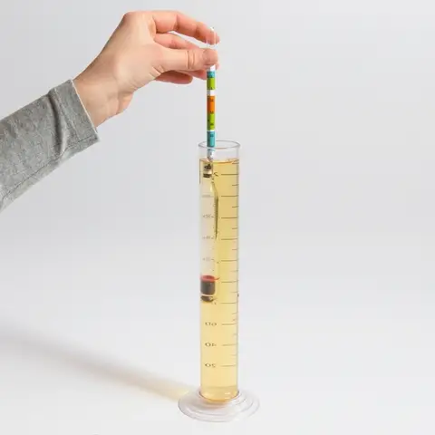
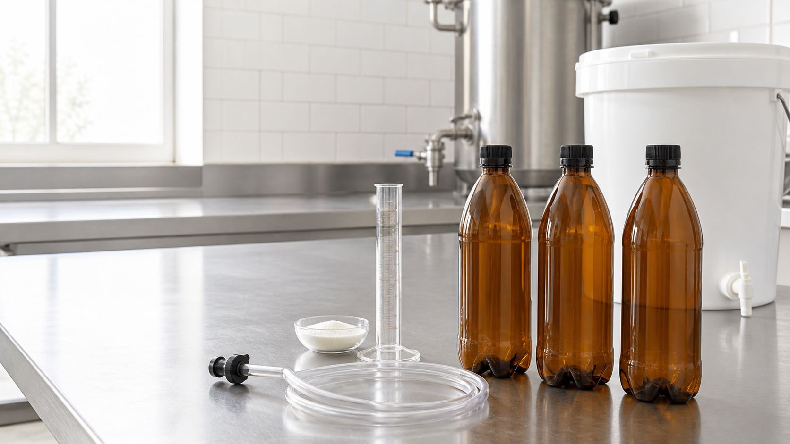

색 · 탁도 · 침전물 · 표면
LAST WEEK → TODAY
FIND YOUR BATCH
지난주 팀으로 모여
발효조를 확인합니다.
아직 뚜껑을 열거나 발효조를 움직이지 않습니다.
SESSION 03
BEER IN
TRANSITION
발효 확인과 병입 실습지난 7일 동안,
발효조 안에서는 무슨 일이 일어났을까?
오늘 우리는 변화를 읽고, 병에 담고, 다음 변화를 기다립니다.
SEVEN DAYS LATER
WHAT CHANGED?
먼저 답을 듣지 말고
변화의 증거를 찾습니다.
효모 · 과일 · 향신료 · 이상 향
에어락 움직임은 단서일 뿐
발효의 판단은 숫자로
NO BUBBLES ≠ FERMENTATION COMPLETE
WHAT DID YEAST MAKE?
SUGAR발효 가능한 당
발효는 알코올만 만드는 과정이 아닙니다.
맥주의 향과 질감도 함께 만듭니다.
THREE BATCHES · THREE STORIES
READ THE NUMBERS
오늘 FG를 입력하면
예상 ABV가 계산됩니다.
ABV= ( OG − FG ) × 131.25예상 FG는 참고값입니다. 병입 여부는 안정성을 포함해 강사가 판정합니다.
WHY WAS APA OG 1.068?
LESS WATER.
MORE CONCENTRATION.
68 gravity points × 14.5L ÷ 20L = 49.3 gravity points
같은 양의 추출물도 물이 적으면 당의 농도와 OG가 높아집니다.
WHAT DOES FG TELL US?
A NUMBER
IN TIME.
FG는 지금 남아 있는 밀도의 기록입니다.
낮은 숫자보다, 멈춘 숫자가 중요합니다.


SAMPLE→FLOAT→EYE LEVEL→RECORD
BEFORE WE SEAL
FG FIRST.
SUGAR SECOND.
24–48시간 간격의 두 값이 같고
예상 범위에 가깝다.
한 번만 측정했거나
예상보다 높은 값이다.
수치가 계속 내려가거나
오염 징후가 있다.
PET도 과압에서 자유롭지 않습니다. 밀봉은 강사의 GO 뒤에만.
FROM ONE FERMENTER TO MANY SMALL ONES
TODAY, WE BOTTLE.
SANITIZE살균→PRIME설탕→SIPHON이송→FILL충전→CAP밀봉→LABEL라벨→STORE보관
01CONTAMINATION오염
02OXIDATION산화
03OVER-CARBONATION과탄산

MEET YOUR STATION
CLEAN.
SANITIZED.
READY.
BOTTLING BUCKET + SPIGOTAUTO SIPHON + TUBE500mL PET + PRESSURE CAPSDEXTROSE + SCALE
맥주에 닿는 모든 표면은
먼저 세척하고, 그다음 살균합니다.
AUTO SIPHON
MOVE BEER.
LEAVE SEDIMENT.
높은 발효조에서 낮은 병입 버킷으로
맥주를 조용히 옮깁니다.
FERMENTERSEDIMENT
PUMPKEEP TIP ABOVE SEDIMENT
BOTTLING BUCKETTUBE TO THE BOTTOM
01TIP SUBMERGED흡입구는 맥주 안에, 침전물 위에
02QUIET FLOW출구는 버킷 바닥 가까이
03NEVER SIPHON BY MOUTH입으로 빨아 시작하지 않기
WHY PRIME EACH BOTTLE?
SUGAR → CO₂
밀봉된 병 안에서
두 번째 작은 발효가 시작됩니다.
DEXTROSE+YEAST→CO₂ IN A SEALED BOTTLE→CARBONATION
강사 GO 판정 후 사용 · 정확히 계량 · 더 넣지 않기
SPLASH = OXYGEN
QUIET FLOW.
FRESHER BEER.
- 01DOSE병별 설탕 계량
- 02TRANSFER버킷으로 조용히 이송
- 03BOTTOM FILL병 바닥부터 충전
- 04HEADSPACE일정한 빈 공간
- 05CAP NOW즉시 밀봉
수도꼭지에 짧은 살균 튜브 또는 병입봉을 연결합니다.
ONE TEAM · ONE FLOW
7 RESPONSIBILITIES
역할은 혼자 일하라는 뜻이 아니라
그 단계의 책임자라는 뜻입니다.
3 TEAMS · ONE MASTER FLOW
MASTER TIMELINE
BRIEFING변화 관찰 · 오늘의 목표
OBSERVE + SAMPLELOOK · SMELL · 필요한 양만
MEASURE FG눈높이 · 기록 · ABV 계산
INSTRUCTOR GATEGO / HOLD · 밀봉 판정
BOTTLING DEMO사이펀 · 프라이밍 · 충전
BREAK + SETUP스테이션 · 역할 · 장비 살균
SANITIZE + PRIMEPET · 뚜껑 · 설탕 계량
SIPHON병입 버킷으로 조용히
FILL + CAP바닥부터 · 한 병씩 밀봉
LABEL + STORE + CLEAN수량 · 컨테이너 · 정리
ALE, TWO WAYSTribute ↔ Saison Dupont
PREDICT NEXT WEEK탄산 · 향 · 질감
시간보다 안전. 실제 진행은 TEAM READY → INSTRUCTOR GO를 따릅니다.
TEAM CAPTAINS REPORT
READY CHECK
01FG RECORDEDFG 기록 완료
02INSTRUCTOR GO강사 판정 완료
03BOTTLES SANITIZEDPET병 · 뚜껑 살균
04PRIMING MEASURED병별 설탕 계량
05SIPHON SANITIZED사이펀 · 튜브 살균
06BUCKET + SPIGOT버킷 · 수도꼭지 살균
07LABELS READY라벨 준비
08STORAGE TOTE READY보관 컨테이너 준비
ALL TEAMS READY?
STATE · 단계AOBSERVE · 관찰
NOW · 지금
LOOK · SMELL · LISTEN
뚜껑을 열기 전, 변화의 증거부터 찾습니다.
NEXT · 다음SAMPLE · 샘플 채취
TASTE BEFORE REVEAL
ALE, TWO WAYS
두 맥주를 먼저 맛보고, 차이를 말합니다.어느 쪽이 더 드라이한가?
탄산은 향과 질감을 어떻게 바꾸는가?
효모의 존재감은 어디에서 더 선명한가?
탄산만의 차이가 아닙니다. 효모 · 발효도 · 원료 · 강도가 함께 만든 결과입니다.
ONE WEEK FROM NOW
PREDICT
THE CHANGE.
7일 뒤 우리 맥주는 지금보다 __________해질 것이다.
가장 크게 달라질 감각은 __________이며,
그 이유는 __________이다.
NEXT · YOUNG BEER CHECK
직접 만든 맥주를 기준 맥주와 비교해 결과를 해석합니다.
BOTTLING IS NOT THE END.병입은 끝이 아니라 다음 발효의 시작입니다.